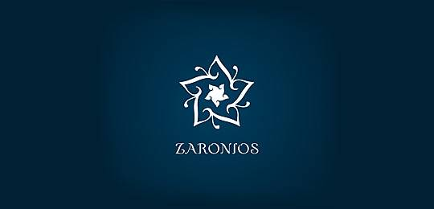

魔术联盟社成立于2010年，由第一届会长廖畦茗发起成立，至今快五年。社团本着“弘扬魔术文化，丰富校园的文娱活动”的思想，在校内积极响应学校号召，参加并筹办各类校级、院级文艺活动，获得多方好评及各类校级、院级证书。在校外，社团经常接手商业演出，与其他大学魔术爱好者、重庆魔术爱好者举办交流。与2011年组建重庆高校魔术爱好者联盟。
在每次活动时，我们将向会员介绍魔术发展历史，魔术师个人资料，魔术道具资料，基本魔术原理，并教授会员一些简单，实用的小魔术，基本魔术手法和初级魔术流程，并鼓励会员发扬创新精神，不拘泥于原有的魔术形式，创造属于自己的新魔术。让会员们能够在活动中真正有所收获，并能把魔术的快乐带给他人。同时，魔术爱好者协会还不定期播放魔术欣赏与教学视频，让会员领略目前世界上最新，最时尚的魔术，使他们能更多领会到魔术的魅力。
我们衷心希望，通过我们魔术联盟社在学校举办的各种活动，一方面，将使魔术走进大学校园，走入每个学生的生活，让大学生成为魔术文化的爱好者，宣传者和普及者；另一方面，将使广大学生在繁忙的学业之余，学习、了解魔术这一富有创新精神的文化艺术。